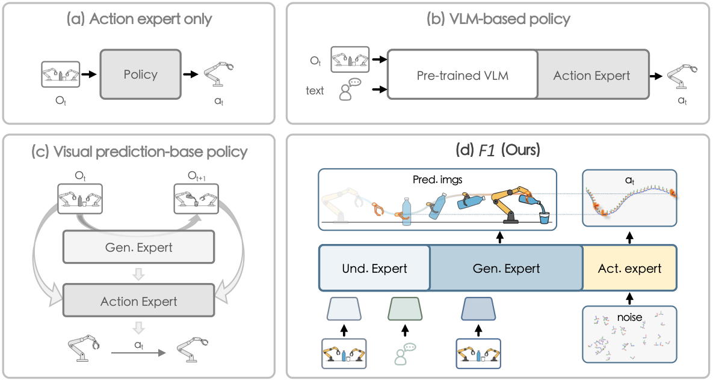
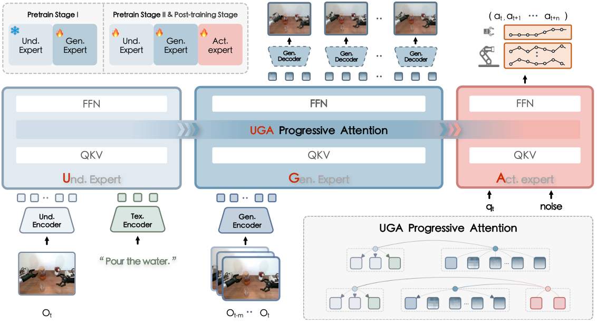
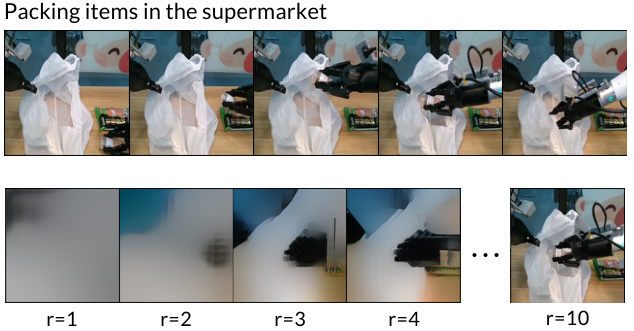
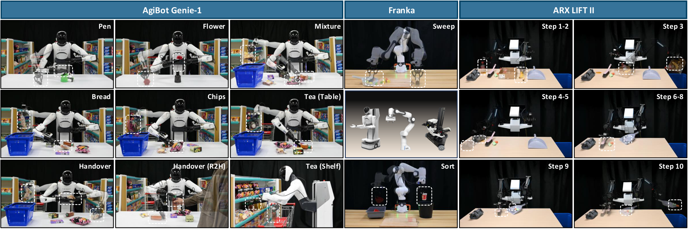
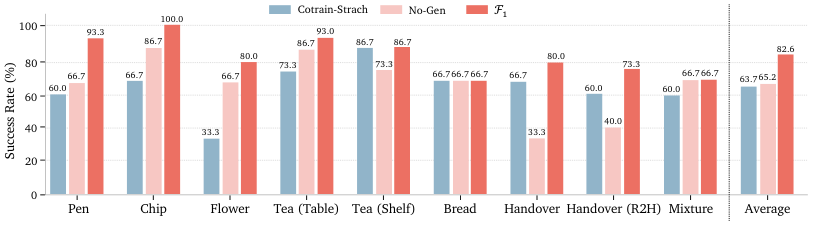
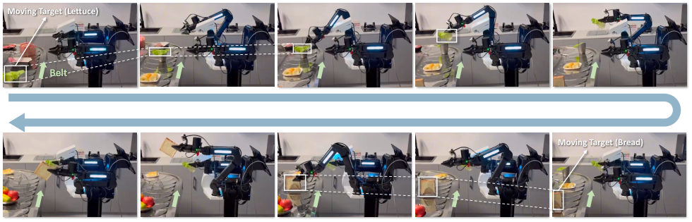
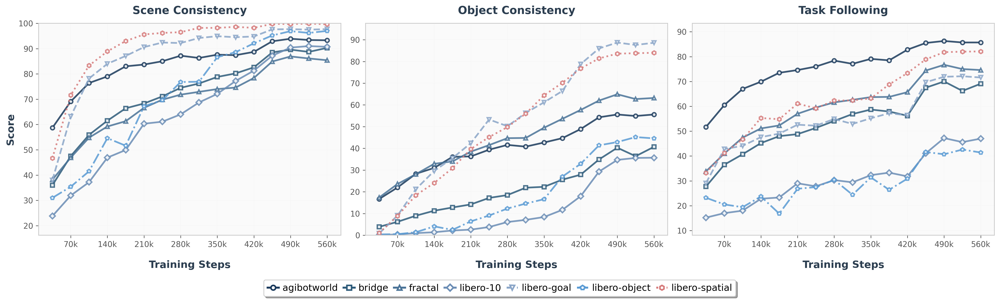
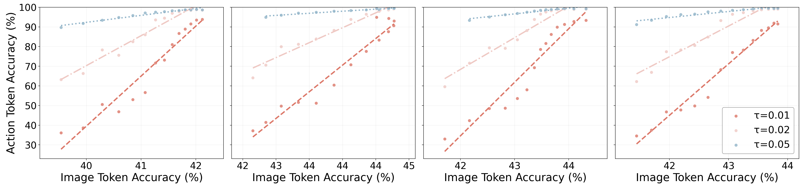

F1: A Vision-Language-Action Model Bridging Understanding and Generation to Actions
1. 论文速览
难度评级：★★★★☆。阅读需要熟悉 VLA、predictive inverse dynamics、Mixture-of-Transformer、VAR/RQ-VAE next-scale image generation、flow matching action prediction，以及 LIBERO / SimplerEnv / 真实机器人评测。
关键词：Vision-Language-ActionVisual ForesightPredictive Inverse DynamicsMixture-of-TransformerFlow MatchingLong-horizon Robotics
| 阅读定位项 | 精简答案 |
|---|---|
| 论文要解决什么 | 现有 VLA 多是 reactive state-to-action mapping，在动态场景和长程任务中短视、脆弱；视觉预测策略又常缺少 VLM 语义 grounding。F1 要把语义理解、未来视觉预测和动作执行合成一条推理链。 |
| 作者的方法抓手 | Mixture-of-Transformer 三专家：understanding expert 处理语言和当前观测；generation expert 用 next-scale prediction 生成 goal-conditioned foresight image；action expert 以 foresight 为显式目标，用 flow matching 生成动作 chunk。 |
| 最重要的结果 | 真实 Genie-1 九任务平均成功率 82.2%，高于 $\pi_0$ 的 65.2%；LIBERO 预训练版平均 95.7%，排名第一；SimplerEnv Bridge 预训练版总体平均 72.9%；动态传送带任务 66.7%，$\pi_0$ 为 33.3%。 |
| 阅读时要注意的点 | F1 的生成模块不只是训练辅助项；论文明确让模型推理时先预测未来观测，再把 action generation 改写成 foresight-guided inverse dynamics。图像不必像素完美，但必须提供 task-progress cue。 |
核心贡献清单
- 提出把 visual foresight generation 显式放入 VLA 决策管线的新范式，使动作预测从 reactive imitation 转向 planning-based control。
- 设计 UGA progressive attention，使信息按 Understanding → Generation → Action 单向流动，避免 action 反向泄漏到 foresight。
- 提出三阶段训练：Stage I 对齐 generation 和 understanding；Stage II 在大规模机器人数据上预训练全模型；Stage III 在目标 embodiment / task 上 post-train。
- 在真实机器人、LIBERO、SimplerEnv Bridge、动态场景、快速适配、长程任务和生成质量相关性上做系统评估。

2. 动机
2.1 要解决什么问题
真实机器人环境不是静态图片分类问题：物体会移动，场景会变化，指令通常需要多步展开。传统 VLA 直接从当前图像和语言映射到动作，容易在动态目标、长程序列、分布变化时产生短视行为。F1 认为，机器人在行动前需要显式预测“如果任务继续推进，下一步视觉状态应该是什么”。
这个问题被表述为 predictive inverse dynamics：先预测未来观测 $\hat{o}_{t+1}$，再推断从当前状态到这个未来视觉目标所需的动作 chunk。动作不只是当前帧的反应，而是朝向一个生成出来的视觉目标。
2.2 已有方法的局限
论文把 manipulation policy 分成三类。ACT、Diffusion Policy 这类 end-to-end action expert 缺少语义 grounding 和跨任务泛化；$\pi_0$、gr00t-N1 这类 VLM-integrated policy 有更强理解能力，但仍然 reactive，缺少场景演化建模；VPP、Genie Envisioner 等 visual prediction policy 能预测未来视觉，但没有充分整合 VLM 语义理解，控制鲁棒性有限。
因此，F1 的核心问题不是“再加一个视频预测损失”，而是找一种 architecture 和 training principle，把语义理解、未来视觉预测、动作执行按可控的信息流连接起来。
2.3 本文解决思路
F1 使用 MoT 三专家：understanding expert 继承 VLM 能力；generation expert 通过 RQ-VAE / next-scale prediction 生成 foresight；action expert 把当前观测、语言、proprioception 和预测未来图像一起作为条件，通过 flow matching 生成连续动作 chunk。训练上先让 generation 学会和 understanding 对齐，再在大规模机器人数据上联合预训练，最后针对具体平台 post-train。
4. 方法详解

4.1 整体 pipeline
给定语言指令 $l$、当前观测 $o_t$ 和历史观测 $\{o_{t-m}, \ldots, o_{t-1}\}$，F1 的计算链如下：
Input: instruction l, current observation o_t, history o_{t-m:t-1}, proprioception q_t
1. Understanding expert:
encode language + current visual observation into semantic multimodal representation
2. Generation expert:
use history + language + understanding representation
generate visual foresight image: o_hat_{t+1}
3. Action expert:
condition on l, o_t, q_t, o_hat_{t+1}
generate action chunk a_hat_{t:t+k} using flow matching
论文强调 $\hat{o}_{t+1}$ 是显式 planning target。action expert 不只依赖当前状态，而是向预测未来视觉状态靠拢。
4.2 Understanding Expert
Understanding expert 初始化自 pretrained vision-language model。当前观测 $o_t$ 先由 SigLIP vision encoder 编成 high-level perceptual features，再与语言 prompt 一起输入 decoder-only Transformer。实现细节里说明 understanding expert 架构与 PaliGemma 相同，并从 $\pi_0$ 继承权重。
4.3 Generation Expert：Next-Scale Visual Foresight
Generation expert 负责生成 $\hat{o}_{t+1}$。它不直接做高成本扩散视频生成，而是采用 VAR 风格 next-scale prediction。近期历史观测 $\{o_{t-m}, \ldots, o_t\}$ 经 multi-scale residual vector quantization 编码，每帧分解为 $16\times16$ patch 上的多尺度 token $\{z_i^0,\ldots,z_i^k\}$。为避免多帧 token 串太长，模型用 temporal convolutional network 聚合 motion-relevant features。

4.4 Action Expert：Foresight-Guided Flow Matching
Action expert 条件于语言、当前观测、foresight image 和 proprioception，输出短程 action chunk $\hat{a}_{t:t+k}$。论文采用 ACT 式 chunked action prediction，并用 flow matching 在连续动作空间中学习从高斯噪声到 expert action 的 vector field。
这个损失在训练 policy 学会：给定当前上下文和带噪动作 $a_t^\tau$，预测应朝真实动作移动的方向。
$$a_t^\tau = (1-\tau)\epsilon + \tau a_t,\quad \tau\sim\mathcal{U}(0,1),\quad \epsilon\sim\mathcal{N}(0,I)$$ $$\mathcal{L}_{\mathrm{action}} = \mathbb{E}\left[\left\|\pi_\theta(l,\{o_i\}_{i=t-m}^{t},q_t,a_t^\tau)-(a_t-\epsilon)\right\|^2\right]$$| $q_t$ | 时刻 $t$ 的 proprioception 信息。 |
| $a_t^\tau$ | 真实动作 $a_t$ 与噪声 $\epsilon$ 的插值点。 |
| $a_t-\epsilon$ | flow matching 目标向量，指向从噪声到真实动作的方向。 |
4.5 UGA Progressive Attention
UGA 指 Understanding-Generation-Action。每个 expert 内部可以进行丰富 token 交互，generation expert 中 foresight tokens 则保持 causal / scale-conditioned pattern。跨 expert 的信息流是单向层级：generation attends to understanding，action attends to both，但 action 不能反向影响 generation，understanding 也不从后续模块接收信息。
这个设计有两个作用：第一，防止训练时 action token 反向泄漏，使 foresight 真的成为中间表示；第二，让模型结构可解释为“先理解，再想象，再执行”。
4.6 三阶段训练
| 阶段 | 目标 | 训练方式 | 关键超参 附录 Training Details |
|---|---|---|---|
| Pretrain Stage I | 给 generation expert 注入 foresight 能力，并与 frozen understanding expert 对齐。 | understanding expert 继承 $\pi_0$ 并冻结；generation expert 随机初始化，用 teacher forcing 预测 ground-truth future visual tokens。 | batch 1280，lr 3e-4，cosine，512K steps，understanding resolution 224，generation resolution 256，10 predicted scales。 |
| Pretrain Stage II | 在大规模机器人数据上联合优化三专家，学习通用 visuomotor 知识。 | 使用 autoregressive predicted foresight tokens + flow matching action prediction，联合训练。 | batch 2880，lr 5e-5 constant，100K steps，Gen:Act loss weight 0.1:1，action chunk size 30，4 predicted scales。 |
| Post-train Stage III | 适配下游平台和任务。 | 在 LIBERO、Simpler、Genie-1、Franka、Dynamic、Long-horizon 等任务数据上 finetune。 | batch 128，lr 5e-5 cosine；Simpler 10 epochs，Genie/Franka/Dynamic 40 epochs，Long-horizon 60 epochs；action chunk size 分别为 4/8/50 等。 |
Stage II/III 的总目标把预测未来图像和生成动作合起来。
$$\mathcal{L}_{\mathrm{total}}=\mathcal{L}_{\mathrm{gen}}^{\mathrm{pred}}+\lambda\cdot\mathcal{L}_{\mathrm{action}}$$其中 $\mathcal{L}_{\mathrm{gen}}^{\mathrm{pred}}$ 是 autoregressive next-scale visual token NLL，$\lambda$ 控制动作损失权重。
4.7 数据规模
附录 Dataset Details 给出完整数据统计：总计 330.9K trajectories、73.8M frames，覆盖 Genie-G1、Franka、WidowX、Google Robot、ARX LIFT II，多视角包括 third-person、wrist/head，帧率 3-30 FPS。
| 数据源 | Stage | Embodiment | # Trajs | # Frames |
|---|---|---|---|---|
| Agibot-World | I + II | Genie-G1 | 187K | 66.4M |
| LIBERO | I + II + III | Franka | 1.7K | 0.3M |
| OXE-Bridge-v2 | I + II + III | WidowX | 53.2K | 1.9M |
| OXE-Fractal | I + II | Google Robot | 87.2K | 3.8M |
| In-house tasks | III | Genie-G1 / Franka / ARX LIFT II | 约 1.8K | 约 1.4M |
5. 实验

5.1 真实 Genie-1 九任务
每个任务 15 次测试，比较 $\pi_0$、gr00t-N1、gr00t-N1.5 和 F1。F1 平均成功率 82.2%，高于 $\pi_0$ 的 65.2%、gr00t-N1.5 的 53.3% 和 gr00t-N1 的 30.4%。
| 方法 | Pen | Flower | Chip | Tea Table | Tea Shelf | Bread | Handover | Handover R2H | Mixture | Avg |
|---|---|---|---|---|---|---|---|---|---|---|
| $\pi_0$ | 66.7 | 66.7 | 86.7 | 86.7 | 73.3 | 66.7 | 33.3 | 40.0 | 66.7 | 65.2 |
| gr00t-N1 | 46.7 | 33.3 | 33.3 | 40.0 | 13.3 | 33.3 | 26.7 | 13.3 | 33.3 | 30.4 |
| gr00t-N1.5 | 73.3 | 40.0 | 46.6 | 73.5 | 26.6 | 53.3 | 60.0 | 40.0 | 66.7 | 53.3 |
| F1 | 93.3 | 80.0 | 100.0 | 93.3 | 86.7 | 66.7 | 80.0 | 73.3 | 66.7 | 82.2 |
论文强调 Handover (R2H) 需要动态调整和人机交互，F1 73.3%，显著高于 $\pi_0$ 的 40.0% 和 gr00t-N1 的 13.3%。
5.2 LIBERO
| 方法 | Pretrained | Spatial | Object | Goal | Long | Average | Avg Rank |
|---|---|---|---|---|---|---|---|
| $\pi_0$ | 是 | 98.0 | 96.8 | 94.4 | 88.4 | 94.4 | 2 |
| gr00t-N1 | 是 | 94.4 | 97.6 | 93.0 | 90.6 | 93.9 | 4 |
| CoT-VLA | 是 | 87.5 | 91.6 | 87.6 | 69.0 | 83.9 | 6 |
| F1 | 否 | 97.4 | 97.6 | 94.2 | 88.0 | 94.3 | 3 |
| F1 | 是 | 98.2 | 97.8 | 95.4 | 91.3 | 95.7 | 1 |
LIBERO-Long 是长程规划压力最大的 suite，F1 预训练版达到 91.3%，超过 $\pi_0$ 的 88.4% 和 gr00t-N1 的 90.6%。这支持作者关于 foresight 对长程任务有效的论点。
5.3 SimplerEnv Bridge
| 方法 | Pretrained | Carrot Success | Eggplant Success | Spoon Success | Stack Success | Overall Avg |
|---|---|---|---|---|---|---|
| SpatialVLA | 是 | 25.0 | 100.0 | 16.7 | 29.2 | 47.9 |
| $\pi_0$ | 是 | 0.0 | 16.6 | 62.5 | 29.1 | 40.1 |
| $\pi_0$-Fast | 是 | 21.9 | 10.8 | 66.6 | 29.1 | 48.3 |
| F1 | 否 | 33.3 | 75.0 | 45.8 | 62.5 | 66.1 |
| F1 | 是 | 70.8 | 66.7 | 50.0 | 50.0 | 72.9 |
SimplerEnv Bridge 任务强调 fine-grained placement。F1 的整体平均明显高于下一个最强 baseline，论文把这一点归因于 foresight 对 source object configuration 和 target location 变化的适应能力。
5.4 仿真消融
| Variant | 含义 | Avg | 主要结论 |
|---|---|---|---|
| F1 | 完整模型 | 77.5 | 基线。 |
| Frozen-Gen | Stage I 后冻结 generation expert | 73.8 | 固定 generation 仍有用，但后续 end-to-end 适配能提升 task alignment。 |
| Cotrain-Scratch | 去掉 Stage II 大规模机器人预训练 | 74.2 | Stage II 提供 manipulation prior，稳定优化。 |
| No-Gen | 移除 generation expert | 60.3 | visual foresight 是最关键模块，去掉后 SimplerEnv 明显崩。 |
| 2-Scales | 推理只预测 2 个 planning scales | 73.4 | foresight 粗糙，规划信息不足。 |
| 6-Scales | 推理预测 6 个 planning scales | 75.8 | 更多尺度未必更好，计算更重且可能引入不稳定；论文最终用 4 scales。 |
5.5 真实任务消融与动态泛化
真实任务消融显示，No-Gen 在 Handover (R2H) 和 Mixture 中分别只有 40.0% 与 60.0%，而 F1 达到 93.3% 与 73.3%。Cotrain-Scratch 也明显低于完整模型，说明 Stage II 的大规模机器人预训练对真实下游泛化有帮助。

动态传送带实验使用 ARX LIFT II，这是预训练数据中没有的 robot embodiment。只用 47 条 post-train demonstrations，F1 在连续双臂动态抓取中成功率 66.7%，$\pi_0$ 为 33.3%；Lettuce 和 Bread 子任务中 F1 分别 80.0%，$\pi_0$ 为 53.3% 和 46.7%。

5.6 快速适配与长程任务
| 实验 | $\pi_0$ | F1 | 说明 |
|---|---|---|---|
| Franka sweep：成功物体数 | 4.9 / 8.0 | 7.1 / 8.0 | F1 扫得更多。 |
| Franka sweep：最大尝试次数 | 4.8 / 5.0 | 3.5 / 5.0 | F1 尝试次数更少。 |
| Franka sweep：空扫次数 | 2.4 / 5.0 | 0.8 / 5.0 | 论文解释为空扫减少反映更精准 spatial grounding。 |
| Sort 第 1/2/3 次连续抓取 | 100 / 86.7 / 53.3 | 100 / 100 / 66.7 | F1 在重复交互中保持性更好。 |
长程 ARX LIFT II 任务包含 10 个步骤、约 2 分钟。$\pi_0$ 在前两个 pickplace 步骤为 93.3%，之后基本 0%；F1 前三步 100%，第 4/5 步 93.3%，后续复杂步骤仍有 73.3%、60.0%、40.0%、40.0%、40.0%。论文承认后续步骤下降符合长程误差累积预期。
5.7 生成质量与动作可靠性
论文没有用传统 FID / PSNR 作为主要生成指标，而是用 Qwen2.5-VL-32B-Instruct 做 task-relevant evaluation。输入包括 task instruction、四帧历史、预测下一帧和 ground-truth frame；输出 scene consistency、object consistency、task progress following 三个二值分数。prompt 模板在 附录 Prompt Template 中给出。

作者观察到 object consistency 曲线较低，原因是 F1 没有在大规模 generative datasets 上预训练；但 task progress following 往往超过 object consistency，说明 foresight 即使像素不完美，也能提供动作相关线索。

6. 复现审计
6.1 代码与资源
已公开：官方 GitHub 为 InternRobotics/F1-VLA，包含 f1_vla/、train_hf.py 和 README 训练入口。项目主页为 F1-VLA，HuggingFace organization 提供模型/数据入口。
README 给出的依赖：Python ≥ 3.10，torch ≥ 2.6.0，CUDA ≥ 12.4；推荐 FFmpeg + TorchCodec 加速视频数据加载。
下载项：README 指向 LIBERO no-op filtered 数据、F1_pretrain checkpoint、lerobot/pi0_base、google/paligemma-3b-pt-224、VAR VAE 权重。
6.2 复现路径
- 克隆仓库并创建环境：
git clone https://github.com/InternRobotics/F1-VLA.git，conda create -n f1_vla python==3.10。 - 安装 PyTorch CUDA 12.4 版本和仓库：
pip install torch==2.6.0 ...，进入F1-VLA/f1_vla后pip install -e .。 - 下载 README 指定 checkpoint / tokenizer / VAE / LIBERO 数据，并在配置中填写路径。
- 编辑配置：
f1_vla/config/debug_test.yaml或对应任务配置。 - 运行训练：
python train_hf.py --config-file f1_vla/config/debug_test.yaml。
6.3 部署延迟
附录 Deploy Platform and Latency Analysis：所有实验在 Intel i9 CPU + NVIDIA RTX 4090 工作站上运行，机器人通过有线 Ethernet 连接。三路同步相机输入时，总推理时间约 235ms。
| 模块 | 延迟 |
|---|---|
| image process / resize | 18ms |
| temporal downsampling | 28ms |
| image encoder | 18ms |
| foresight generation | 76ms |
| x10 action forward pass (flow) | 95ms |
| Total | 235ms |
6.4 复现风险
- 大规模训练成本高：Stage I 512K steps，Stage II 100K steps，batch size 分别 1280 / 2880，真实完整预训练不是单卡轻量复现实验。
- 真实机器人任务依赖 in-house demonstrations 和 Genie-G1 / Franka / ARX LIFT II 平台，公开代码不等于可复现实物表格。
- 生成质量评估依赖 Qwen2.5-VL-32B-Instruct 作为 evaluator，prompt 已公开在附录，但评估稳定性仍取决于模型版本和调用设置。
- 论文声称 F1 是 4.2B 参数模型，工程上还需要 PaliGemma / $\pi_0$ / VAR VAE 等初始化资源和多视角视频处理链路。
7. 分析、局限与边界
7.1 这篇论文最有价值的地方
基于论文自身证据，最有价值的是把 “future image prediction” 从辅助训练目标提升为推理时的显式规划中间变量。F1 让 generation expert 先产出 visual foresight，再让 action expert 以它为目标做 inverse dynamics，这比单纯在 backbone 上加一个动作头更接近“先想象再执行”的结构。消融中 No-Gen 从 77.5% 降到 60.3%，真实 Handover (R2H) 和动态传送带任务也显示 foresight 对复杂动态特别重要。
7.2 结果为什么站得住
论文的证据链比较完整：真实九任务显示 F1 相对 $\pi_0$ 提升平均成功率；LIBERO 和 SimplerEnv 提供仿真基准；Frozen-Gen、Cotrain-Scratch、No-Gen、2/6 scales 消融分别验证 generation 可训练性、Stage II 预训练、generation expert 本身、推理 scale 数；动态传送带、Franka 快速适配和 10-step 长程任务展示了超出短程静态抓取的场景；生成质量章节又说明 foresight quality 与 action accuracy 正相关。
7.3 作者自述的局限与未来方向
- Foresight image 的像素级细节仍有限，尤其是网格购物车、塑料袋、衣物等细粒度或可变形物体。作者把原因归于没有在大规模生成式数据集上预训练 generation expert。
- 长程任务后半段成功率下降明显，论文解释为长程误差累积和复杂推理难度上升。
- 未来方向包括扩展到更多 embodiments 和 task families，如 locomotion、dexterous manipulation、multi-agent collaboration。
- 作者还提出可用 structured world models 或 physics-informed priors 增强 foresight，结合 reinforcement learning / online adaptation / human feedback 做持续改进。
7.4 适用边界
F1 适合未来视觉状态能为动作提供明确规划目标的 manipulation 任务，尤其是动态目标、长程步骤、手眼协调和跨平台适配。它较依赖多视角历史图像、proprioception、生成式视觉 tokenization 和较重的推理链。对于不可见接触力、纯触觉反馈、极高速闭环控制、或目标状态无法通过图像表达的任务，论文证据还不足。